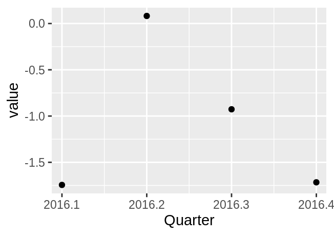
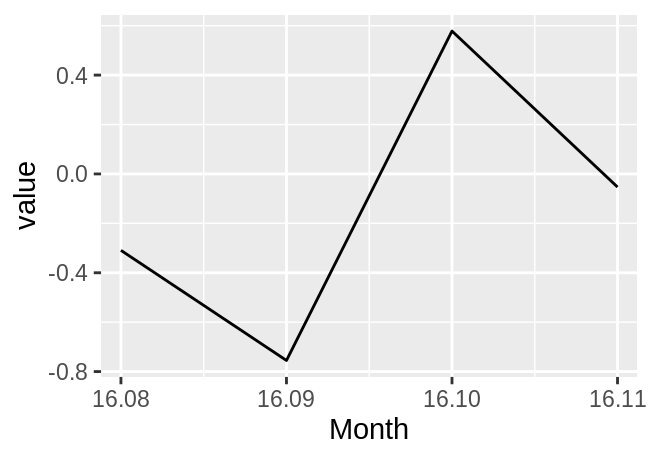
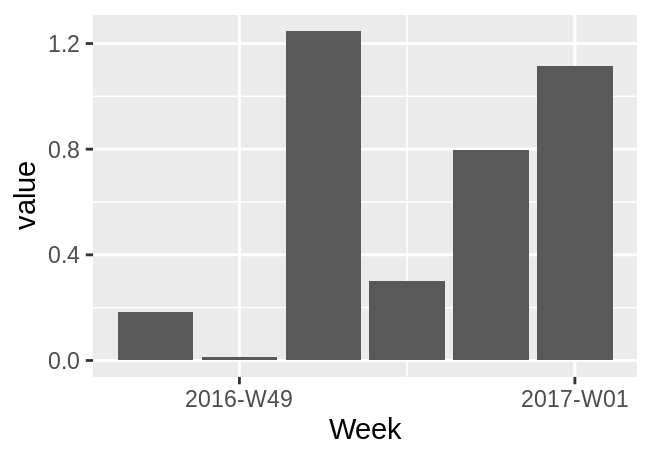
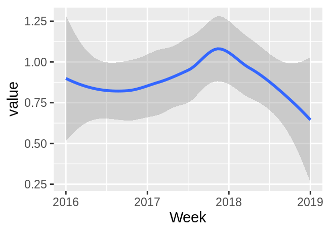
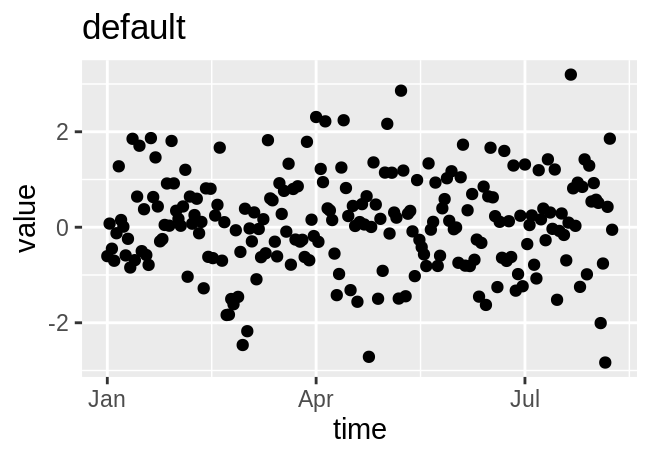
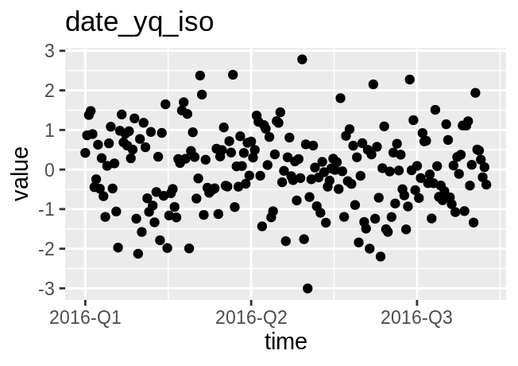
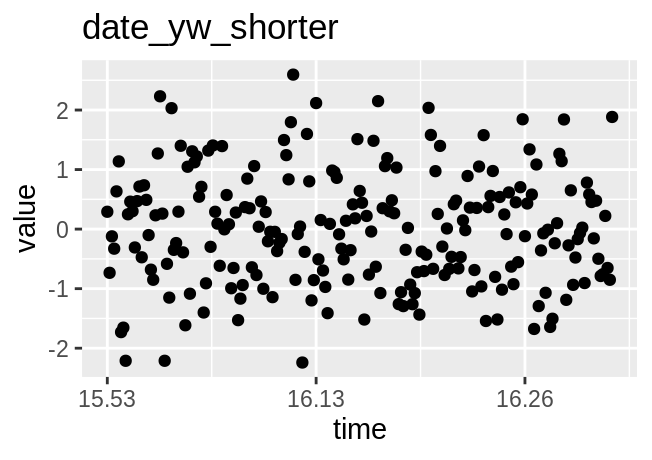

vignettes/dint.Rmd
dint.Rmddint helps you with working with year-quarter, year-month and year-isoweek dates. It stores them in an easily human readable integer format, e.q 20141 for the first quarter of 2014 and so forth. If you are already using such integers to represent dates, dint can make many common operations easier for you.
dint is implemented in base R and comes with zero external dependencies. Even if you don’t work with such special dates directly, dint can still help you at formatting dates, labelling plot axes, or getting first / last days of calendar periods (quarters, months, isoweeks).
dint provides 4 different S3 classes that inherit from date_xx1.
date_yq for year-quarter datesdate_yw for year-month datesdate_yw for year-isoweek dates. Please note that the year for isoweeks does not necessarily correspond to the calendar year wikipedia
date_y for storing years. This class exists for consistency and provides little advantage over storing years as bare integers. The main use of this class is in package development when you want to write your own generics and methods for years.date_xx vectors can be created using explicit constructors…
date_yq(2015, 1)
#> [1] "2015-Q1"
date_ym(c(2015, 2016), c(1, 2))
#> [1] "2015-M01" "2016-M02"
date_yw(c(2008, 2009), 1)
#> [1] "2008-W01" "2009-W01"..or through coercion of Dates or integers
You can coerce Dates to any date_xx subclass with as_date_**()
d <- as.Date("2018-05-12")
as_date_yq(d)
#> [1] "2018-Q2"
as_date_ym(d)
#> [1] "2018-M05"
as_date_yw(d)
#> [1] "2018-W19"
as_date_y(d)
#> [1] "2018"Conversely, you can convert date_xx back to R Dates
as.POSIXct() creates datetimes in UTC/GMT, so the result might not always be as expected, depending on your local timezone.
All date_xx support addition, subtraction and sequence generation.
q <- date_yq(2014, 4)
q + 1
#> [1] "2015-Q1"
q - 1
#> [1] "2014-Q3"
seq(q - 2, q + 2)
#> [1] "2014-Q2" "2014-Q3" "2014-Q4" "2015-Q1" "2015-Q2"
m <- date_ym(2014, 12)
m + 1
#> [1] "2015-M01"
m - 1
#> [1] "2014-M11"
seq(m - 2, m + 2)
#> [1] "2014-M10" "2014-M11" "2014-M12" "2015-M01" "2015-M02"
w <- date_yw(2017, 33)
w + 1
#> [1] "2017-W34"
w - 1
#> [1] "2017-W32"
seq(w - 2, w + 2)
#> [1] "2017-W31" "2017-W32" "2017-W33" "2017-W34" "2017-W35"You can access components of date_xx (e.g the quarter of a date_yq) with accessor functions. You can also use these functions to convert between date_xx vectors.
q <- date_yq(2014, 4)
get_year(q)
#> [1] 2014
get_quarter(q)
#> [1] 4
get_month(q) # defaults to first month of quarter
#> [1] 10
get_isoweek(q)
#> [1] 40
m <- date_ym(2014, 12)
get_year(m)
#> [1] 2014
get_quarter(m)
#> [1] 4
get_month(m)
#> [1] 12
get_isoweek(m)
#> [1] 49
w <- date_yw(2014, 33)
get_year(w)
#> [1] 2014
get_quarter(w)
#> [1] 3
get_month(w)
#> [1] 8
get_isoweek(w)
#> [1] 33If you use lubridate, you can just use the slightly less verbose lubridate accessors
suppressPackageStartupMessages(library(lubridate))
year(q)
#> [1] 2014
quarter(q)
#> [1] 4
month(q)
#> [1] 10You can get the first and last days of calendar periods with dint
q <- date_yq(2015, 1)
first_of_quarter(q) # the same as as.Date(q), but more explicit
#> [1] "2015-01-01"
last_of_quarter(q)
#> [1] "2015-03-31"These functions work with normal dates
d <- as.Date("2018-05-12")
first_of_year(d)
#> [1] "2018-01-01"
last_of_year(d)
#> [1] "2018-12-31"
first_of_quarter(d)
#> [1] "2018-04-01"
last_of_quarter(d)
#> [1] "2018-06-30"
first_of_month(d)
#> [1] "2018-05-01"
last_of_month(d)
#> [1] "2018-05-31"
first_of_isoweek(d)
#> [1] "2018-05-07"
last_of_isoweek(d)
#> [1] "2018-05-13"
# Alternativeley you can use these:
first_of_yq(2012, 2)
#> [1] "2012-04-01"
last_of_ym(2012, 2)
#> [1] "2012-02-29"
last_of_yw(2011, 52)
#> [1] "2012-01-01"Formatting date_xx vectors is easy and uses a subset of the placeholders of base::strptime() (+ %q for quarters).
dint implements scale_date_**() and date_**_breaks() that provide nicely labeled axes for ggplots by default
q <- data.frame(
time = seq(date_yq(2016, 1), date_yq(2016, 4)),
value = rnorm(4)
)
m <- data.frame(
time = seq(date_ym(2016, 8), date_ym(2016, 11)),
value = rnorm(4)
)
w <- data.frame(
time = seq(date_yw(2016, 48), date_yw(2017, 1)),
value = abs(rnorm(6))
)
w2 <- data.frame(
time = seq(date_yw(2016, 1), date_yw(2019, 1)),
value = abs(rnorm(157))
)
ggplot(q, aes(x = time, y = value)) +
geom_point()
ggplot(m, aes(x = time, y = value)) +
geom_line() +
scale_x_date_ym(labels = format_ym_shorter)
ggplot(w, aes(x = time, y = value)) +
geom_col() +
scale_x_date_yw(labels = format_yw_iso)
ggplot(w2, aes(x = time, y = value)) +
geom_smooth()
#> `geom_smooth()` using method = 'loess' and formula 'y ~ x'
If you use R Date vectors, you can still use the formatting functions supplied by dint to generate nice axis labels.
x <- data.frame(
time = seq(as.Date("2016-01-01"), as.Date("2016-08-08"), by = "day"),
value = rnorm(221)
)
p <- ggplot(
x,
aes(
x = time,
y = value)
) + geom_point()
p + ggtitle("iso") + ggtitle("default")
p + scale_x_date(labels = format_yq_iso) + ggtitle("date_yq_iso")
p + scale_x_date(labels = format_ym_short) + ggtitle("date_ym_short")
p + scale_x_date(labels = format_yw_shorter) + ggtitle("date_yw_shorter")
date_xx is just a superclass for all dint date classes, you do not need to use it directly↩